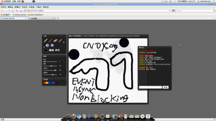
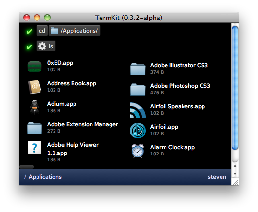
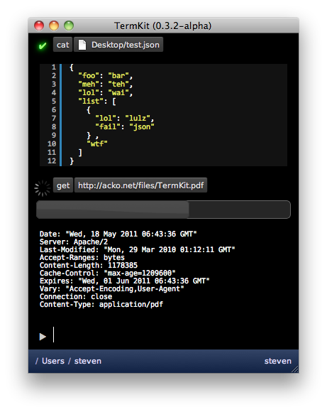
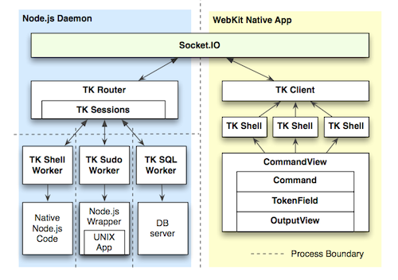
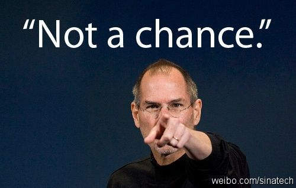

初识Node.js
html5研究小组
www.mhtml.com
@秀野堂主
cygwin
多人聊天室
iframe刷新，ajax定时刷新，comet，flash socket
WebSocket
多人协作画图

cnodejs.org
使用Node.js
使用javascript语言 弱类型 解释型 闭包
基于V8引擎，可调用C编写的模块
事件，异步，non-blocking
方便的端口监听实现
模仿Minicooper的地图追踪游戏
Demo
Timers
WebSocket
node.websocket.js
socket.io&now.js
googlemaps
Node.js GUI
Appcelerator Titanium Desktop
HTML+CSS+JavaScript Native Application
TermKit
  
nodeunit
Simple syntax, powerful tools.
Just export the tests from a module.
Works with node.js and in the browser.
Testing asynchronous code
SetUp and tearDown
Allows the use of mocks and stubs
Demo
expresso
TDD
Additional assertion methods
Code coverage via node-jscoverage
CI
Node.js 托管服务器
no.de
heroku
jsapp
cnode app engine
齐家治国平天下
青山老妖
黄冠
@青山老妖_黄冠
创业中，软件工程师，非专业产品设计师
理想主义，Geek，敏捷，html5
吃饭睡觉写代码

知乎者也